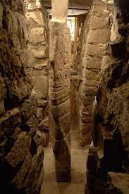
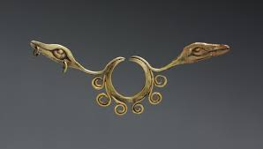

Chavin de Huantar. Northern highlands, Peru. Chavin 900- 200BCE Stone (architecture) Granite (Lanzon); hammered gold alloy (jewelry).
Form
Inside the old temple of Chavin is a mazelike system of hallways
Passageways have no natural light source; they are lit by candles and lamps
At the center, underground, is the Lanzon Stone; blade shaped; which may also represent a primitive plow; hence, the role of the god ensuring a successful crop
Depicts a powerful figure that is part human and part animal; the god of the temple complex.
Head of snakes and a face of a jaguar
Eyebrows terminate in snakes
Flat relief; designs in a curvilinear pattern
15 feet tall
Function
Served as a cult figure
Center of pilgrimage; however, few had access to the Lanzon Stone
Modern scholars hypothesize that the stone acted as an oracle; hence a point of pilgrimage
New studies show the importance of acoustics in the underground chamber

Relief sculpture, granite, Chavin de Huantar
Shows jaguars in shallow relief
Located on the ruins of a stairway at Chavin

Nose ornament, hammered gold alloy, Cleveland Museum of Art
Form
Worn by males and females under the nose
Held in place by the semicircular section at the top
Two snake heads on either end
Function
Transforms the wearer into a supernatural being during ceremonies
Context
Elite men and women wore the ornaments as emblems of their ties to the religion and eventually were buried with them.
The Chavin religion is related to the appearance of the first large-scale precious metal objects; a revolutionary new metallurgical process
Technical innovations express the “wholly other” nature of the religion